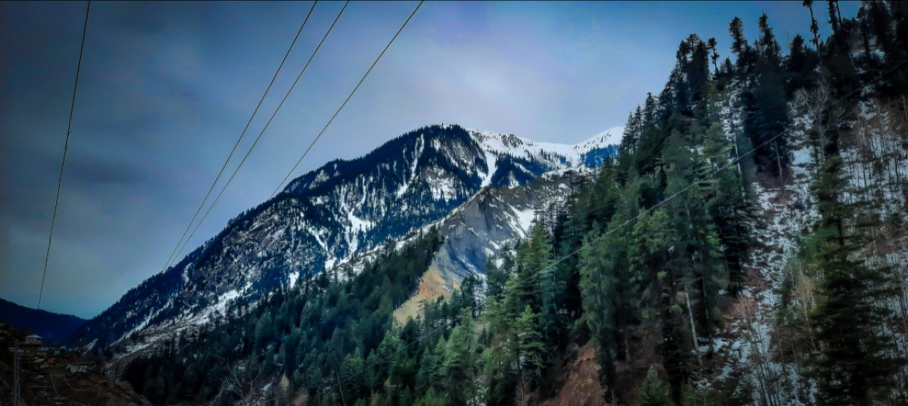

Join me and my family on our unforgettable journey to Naran in 2022. Naran, nestled in the picturesque upper Kaghan Valley in the Mansehra District of Khyber Pakhtunkhwa, Pakistan, captivated us with its breathtaking landscapes and serene atmosphere.We explored the scenic beauty of Shingri Top, where we were mesmerized by the panoramic views of snow-capped peaks and lush green valleys. The crisp mountain air and the soothing sound of gushing rivers made our stay truly rejuvenating.
Whether you are an adventure enthusiast looking to trek through the majestic Himalayas or a nature lover seeking tranquility amidst the mountains, Naran offers something special for everyone.Come along as we share our experiences, photos, and recommendations from this incredible journey. Let Naran inspire your next travel adventure!